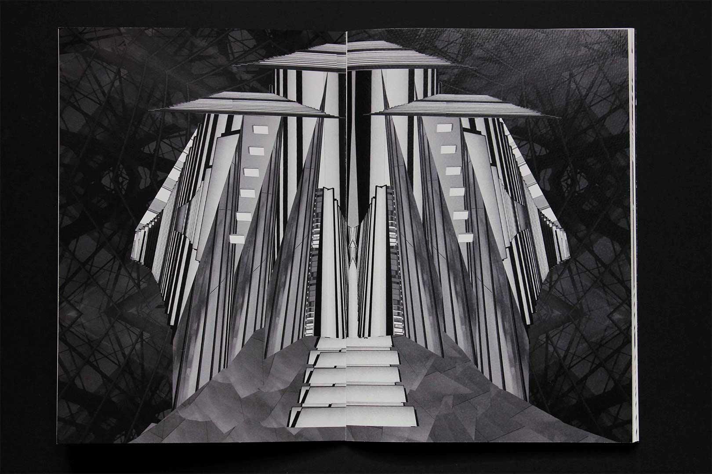
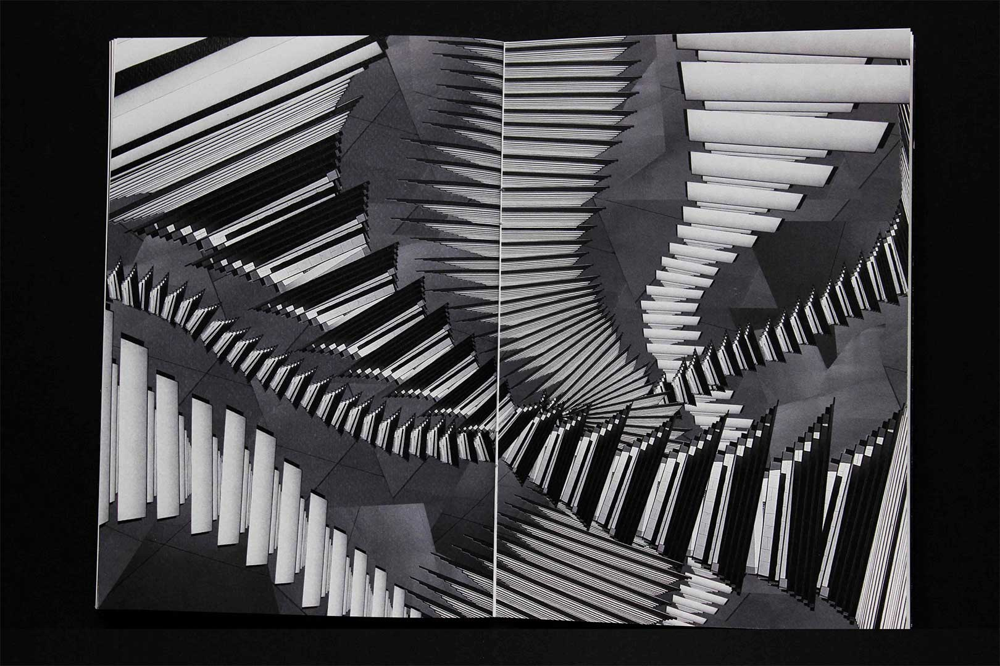
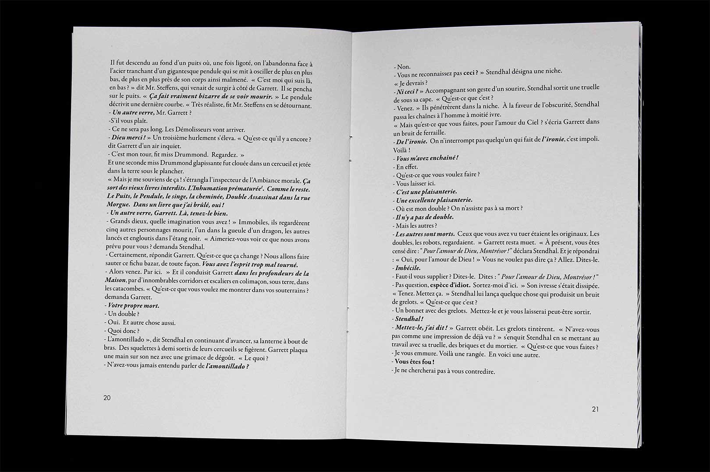

Travail de réédition de Usher II, une nouvelle extraite du recueil Chroniques Martiennes de Ray Bradbury. L’édition adopte le point de vue du personnage principal, Stendhal, qui construit une maison hantée. Son objectif est d’éliminer les hauts dirigeants de son univers car ils bannissent toute forme d’art. Certaines répliques clés sont mises en exergue et soulignent les sous-entendus qu’il glisse à ses interlocuteurs. Trois photomontages en noir et blanc ponctuent l’édition et représentent la gigantesque maison jusque dans ses entrailles...